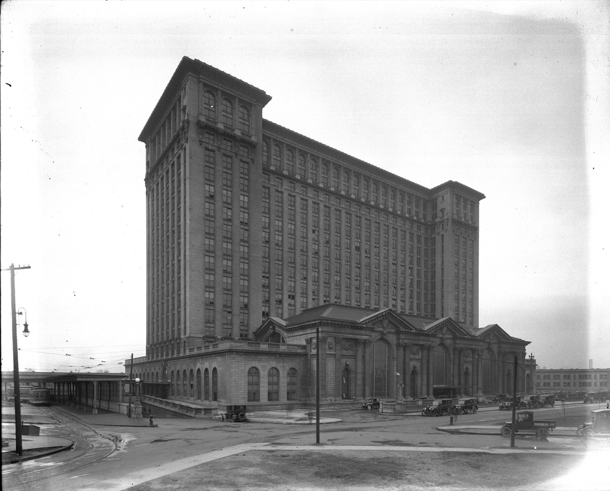

街の姿を
あの頃のままに。
本物のアーカイブ写真を、今と並べて。

1913
Then
& now
時を
さかのぼって歩く。
立ち寄るたびに地図が昔に戻るガイドツアー。
今の街に
古地図を重ねて。
今から1850年までスライド。
Since
1850
2,400の名所。
パスポートはひとつ。
166都市と122の大学キャンパスでスタンプを集めよう。
行く前に
キャンパスを知る。
名所、歴史、スクールカラー。
学生の
伝統を体験。
250以上のキャンパスの伝統をチェック。
250+
3Dで
空から見る。
都市とキャンパスのリアルな3Dマップ。
毎日の予定を
まとめて。
立ち寄り先、徒歩時間、食事の場所。